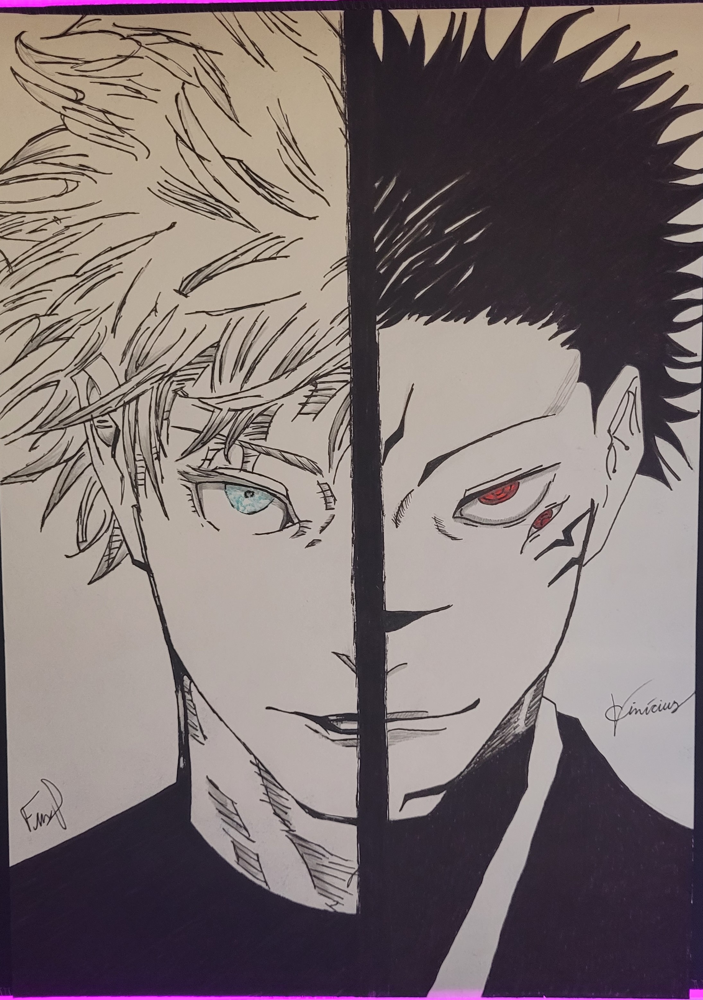
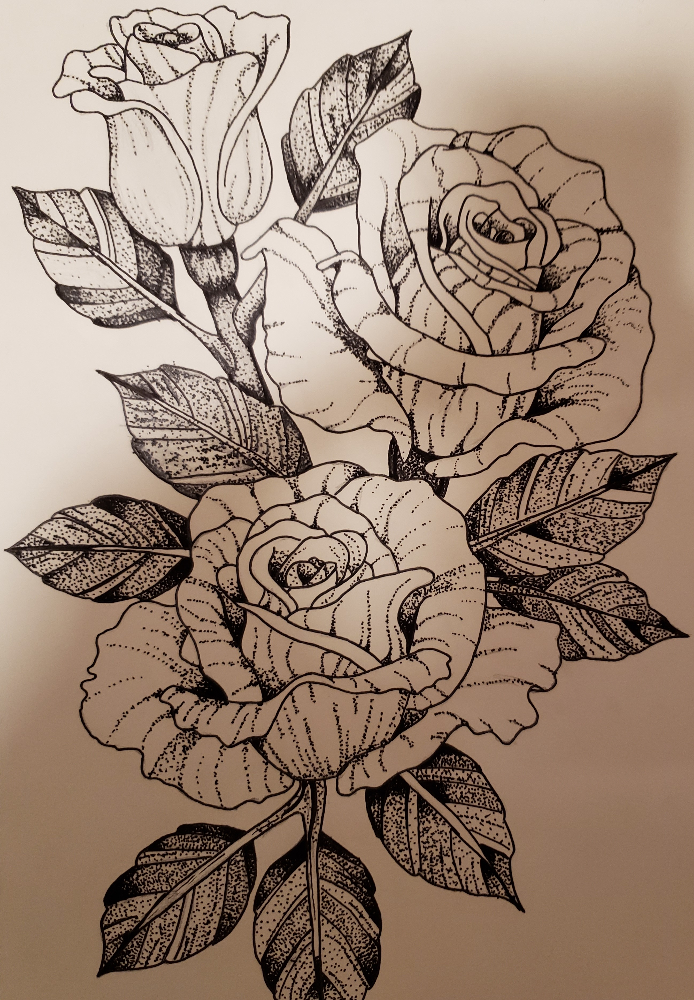
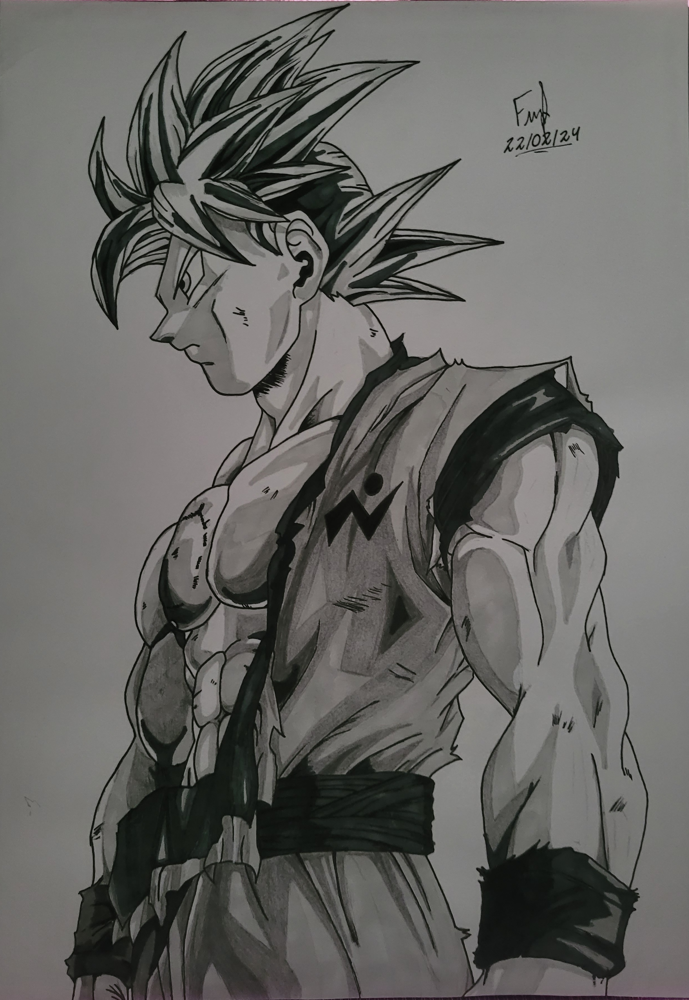

Bem-vindo à minha página de hobbies, onde compartilho algumas das atividades que mais me apaixonam e que preenchem meu tempo livre com alegria e entusiasmo. Sou alguém que acredita na importância de encontrar um equilíbrio entre trabalho e lazer, e é aqui que você encontrará uma visão detalhada das minhas paixões e interesses fora do cotidiano.Desde jogar videogame a desenhar, de competir no campo de futebol às quadras de basquete, cada atividade representa uma parte única da minha identidade e oferece uma oportunidade para expressão pessoal, crescimento e diversão. Convido você a explorar este espaço e descobrir um pouco mais sobre o que me motiva e inspira.

Meu tempo livre é preenchido com uma mistura eclética de atividades que me trazem alegria e desafio. Uma parte significativa do meu dia é dedicada à minha paixão por jogar videogame. Desde aventuras épicas nos incríveis mundos abertos da franquia Assassin’s Creed, até competições acirradas dentro dos grandiosos estádios de Rocket League. Encontrar-me imerso em mundos virtuais é uma fonte constante de entusiasmo e diversão.

Minha criatividade encontra expressão através do desenho. Cada traço no papel é uma oportunidade para transformar minha imaginação em realidade, explorando novas técnicas e estilos. Desde pequeno sempre tive uma paixão pelo anime de Dragon Ball. Esta paixão despertou um interesse insaciável de desenhar essa história incrível com minhas próprias mãos. Em meio aos traços, vou relembrando toda a história por trás deste maravilhoso anime. Cada transformação, cada sentimento expresso em forma de poder, me deixavam ainda mais motivado a continuar. Nos dias atuais, não tenho desenhado com tamanha frequência se comparado aos meus períodos de 13 e 14 anos. Porém, uma vez ou outra, sinto uma vontade de voltar às minhas origens, sentimento esse que não deixo guardado, fazendo eu adentrar nesse mundo mágico novamente, onde quem cria a história…sou eu.
  Quando o clima permite, adoro reunir amigos para uma partida emocionante de futebol ou basquete. Esses momentos não apenas exercitam meu corpo, mas também fortalecem os laços de camaradagem e competição saudável. Assim, entre telas digitais e canetas no papel, entre dribles e cestas, encontro um equilíbrio gratificante entre minhas paixões - um lembrete constante de que a vida é um playground diversificado esperando para ser explorado."